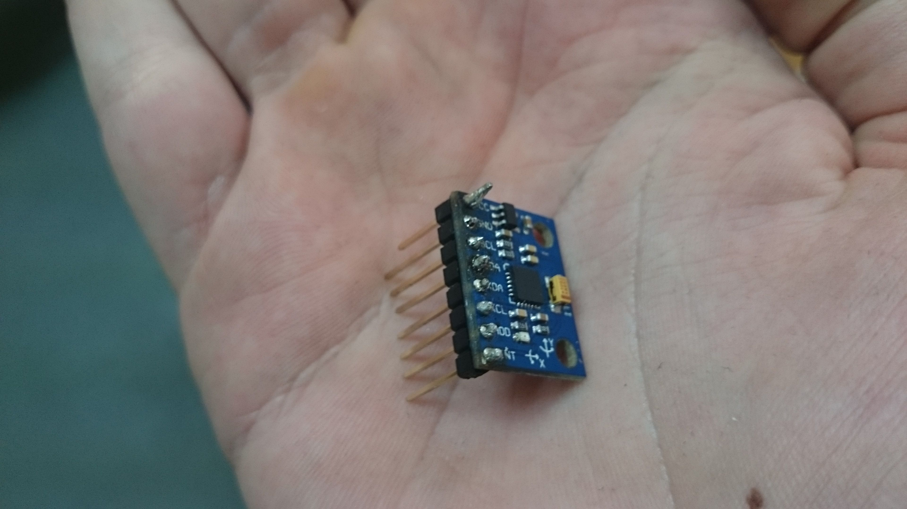

前回、一つのドローンとサーバーの間へ通知について話しました。その時に、一人のプロジェクト員がドローンの飛びを安定するコンポーネント関する作業しました。この記事でドローンの飛びを安定するコンポーネントを紹介します。
ジャイロスコープはフランスの物理学フーコーが1852年に作った測定器です。ローターと三つの環から成ります。最後の環に比べてロータが三つの自由度の間へ動くために、環は一緒に結び付けてあります(自由度の行列＝環/{0, 0, 0, Rx, Ry, Rz})
あの特徴のお陰で、ジャイロスコープは角運動量と言う物理原理を利用します。あの物理原理は「回る立体に力を当てたら、回りに垂直な力を作ります。」を意味します。ジャイロスコープの場合には自由度が三つありますから、あの力と回りを作る力は環で吸収されます。だから、ローターは何もの力を受けて、慣性系に固定に残ります。環の動きを分析して、ローターに比べて(すなわち、慣性系)ジャイロスコープの動きが分かります。
ジャイロスコープは動く機器を作ったら、良く使う測定器です。物の方向について信頼な情報を生み出しますので、機械を操縦するか安定する為に凄く便利になります。これから、私たちのドローンにジャイロスコープを使って決まりました。
決めたジャイロスコープはMPU6050です。工業に人気し、私たちのドローンと矛盾しないし、安いし、同じチップに加速度計もあるから、これを決めました。加速度計はドローンの動きと位置を知るの役に立ちますけど、このコンポーネントについて他の記事を後で書きます。
この測定器は三つの軸で設立させます(Xの軸とYの軸はチップに書いてあるが、Zの軸はチップに垂直です)。
ジャイロスコープに角運動量を当てて出来るのが必要だから、角は[-80°, 80°]のセットの中で変わります。このセット以上に引力が角運動量は作る要素に近づき過ぎて、測定は間違う成ります。
Zの軸の回りは[-180°, 180°]のセットの中で変わります。
私たちのドローンを作ってMPU6050を使う為に、Jeff Rowbergの作業より私たちが霊感しました。あのコードは測定器の計りの解釈を貰います。
この情報を分析して、ドローンの傾斜のが分かります。これから、モーターに適当な処理を当てます。ドローンの役割は地形を計るから、定常な飛び(すなわち、地面に平行線)が必要です。従って、定常な飛びを達成する為に、ジャイロスコープがモーターを制御します。